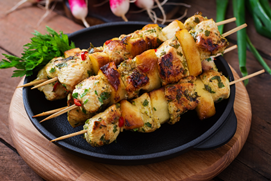

Chicken Skewers with Slices of Apples and Chili

Ingredients
- 500g Chicken Breast Boneless, cut into cubes
- 2 Apples Thinly Sliced
- 2-3 Red Chilies Finely Chopped
- 1 tbsp Olive Oil
- 1 tbsp Soy Sauce
- 1 tsp Honey
- 1/2 tsp Ground Black Pepper
- 1/2 tsp Salt Adjust to taste
- 1 tbsp Lemon Juice
- 1/2 tsp Smoked Paprika
- Fresh Coriander For garnish
Steps
-
Prepare the Marinade: In a bowl, mix olive oil, soy sauce,
honey, black pepper, salt, lemon juice, and smoked paprika.
-
Marinate the Chicken: Add chicken cubes to the marinade and
toss well. Cover and refrigerate for at least 30 minutes to let the
flavors absorb.
-
Prepare the Skewers: Thread the marinated chicken cubes,
apple slices, and chopped red chilies alternately onto skewers.
-
Preheat the Grill: Preheat your grill or grill pan over
medium-high heat.
-
Grill the Skewers: Place the skewers on the grill and cook
for 10-12 minutes, turning occasionally, until the chicken is fully
cooked and lightly charred.
-
Garnish and Serve: Once cooked, remove the skewers from the
grill and garnish with fresh coriander. Serve immediately with a
side of your choice.